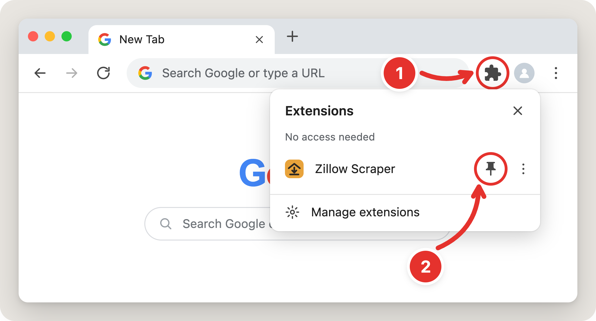
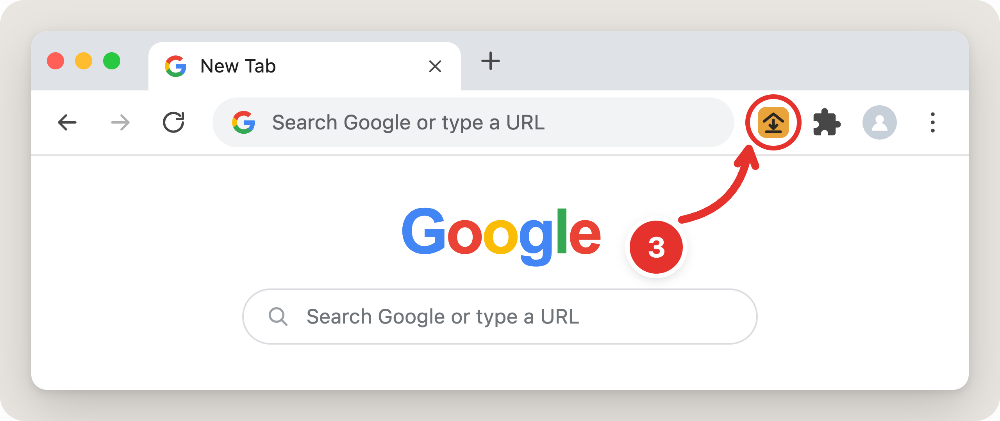

Pin it to your toolbar so it's always one click away.


Next: open a Zillow search — the page with the map and the list of homes. A button appears in the corner, and every search page you open adds its listings.
Press Export collected for an instant CSV, or Export all results to walk the whole search. Each search gets its own file, and nothing leaves your browser.